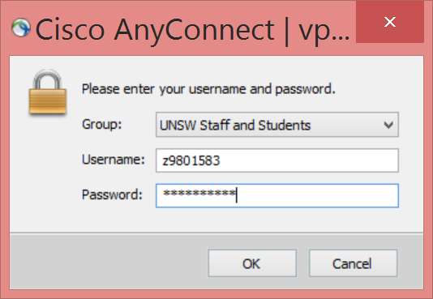
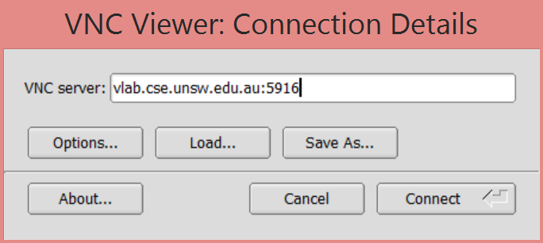
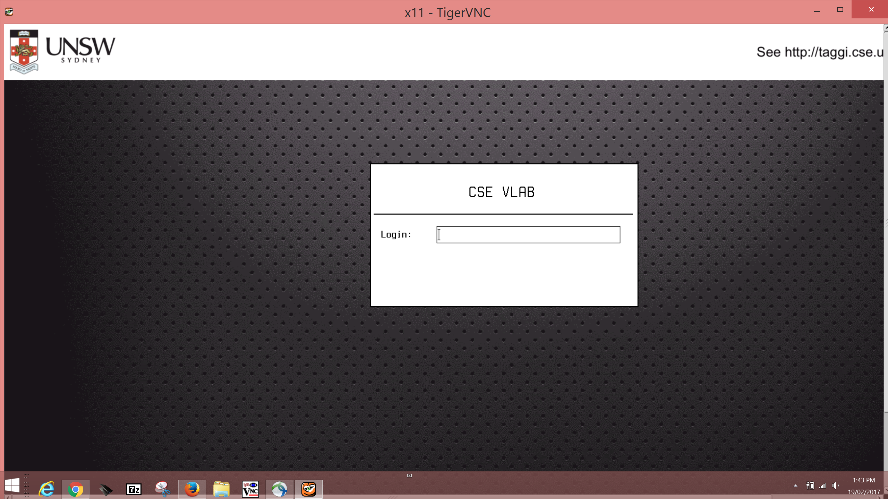
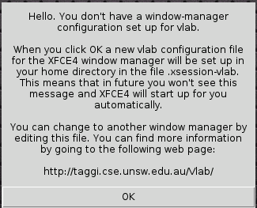
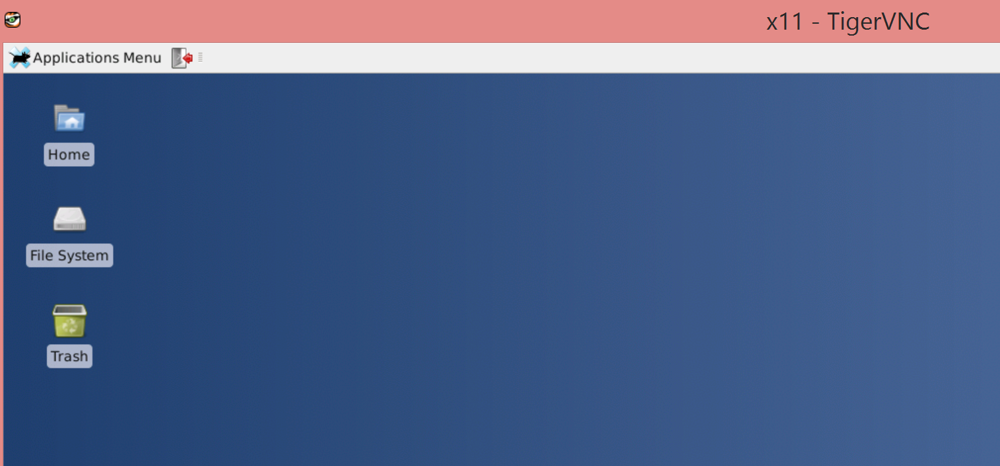
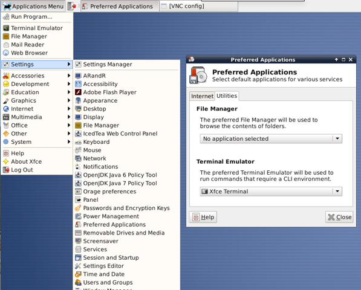
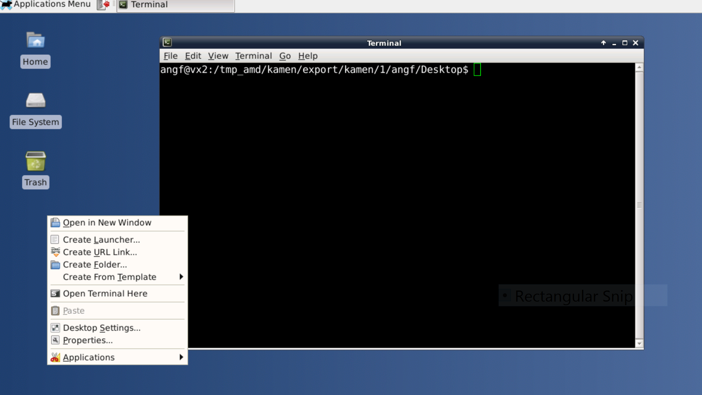

We recommend TigerVNC which runs on Windows OSX (Macs) and Linux.
Download TigerVNC viewer here.
You want the link ending in dmg for OSX (Mac). For windows you want on of the .exe links, depending on whether you are running 32 or 64-bit windows.
Then follow any installation instructions.
If you login with zpass/zid to https://vpn.unsw.edu.au/ you should be able to download and install the AnyConnect Secure Mobility Client.


vlab.cse.unsw.edu.au:5913
The last number is the port. It determines the resolution vlab provides. On a high-resolution screen try 5916 for 1920x1080 (see details about ports here)
| Resolution | vlab port |
|---|---|
| 640 x 480 | vlab.cse.unsw.edu.au:5911 |
| 800 x 600 | vlab.cse.unsw.edu.au:5912 |
| 1024 x 768 | vlab.cse.unsw.edu.au:5913 |
| 1280 x 800 | vlab.cse.unsw.edu.au:5914 |
| 1680 x 1050 | vlab.cse.unsw.edu.au:5915 |
| 1920 x 1080 | vlab.cse.unsw.edu.au:5916 |




We recommend making a change to the settings, so you use what we think is the best terminal. Goto the Applications Menu->Settings->Settings Manager, you should click on Preferred Applications and then the Utilities tab and select the Xfce Terminal as your terminal Emulator. This is illustrated below:

You can now right click on your desktop and open a terminal.

Try running gedit and dcc.